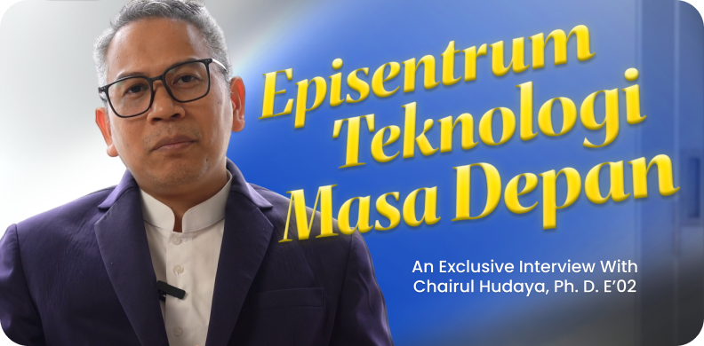
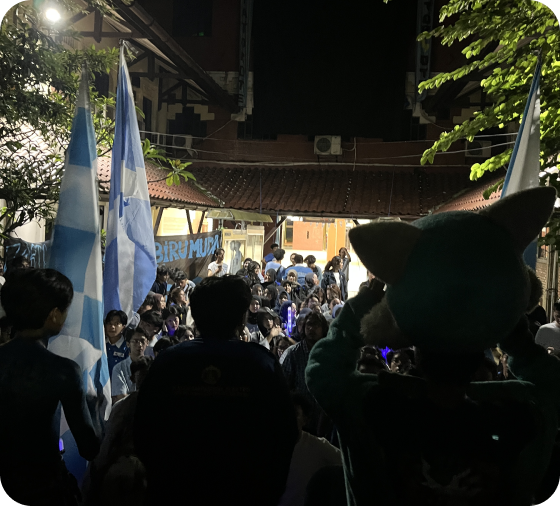
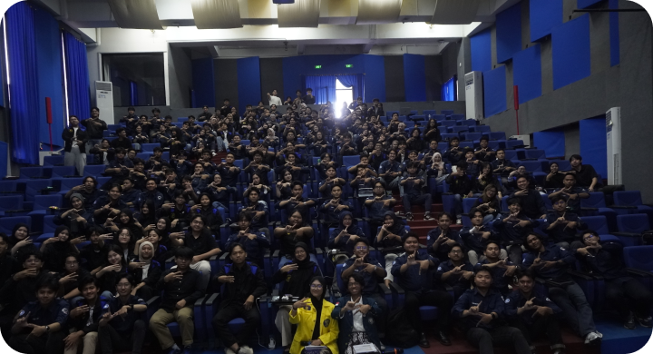
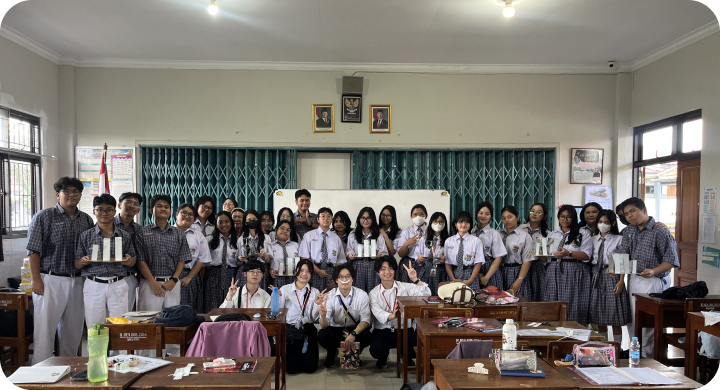
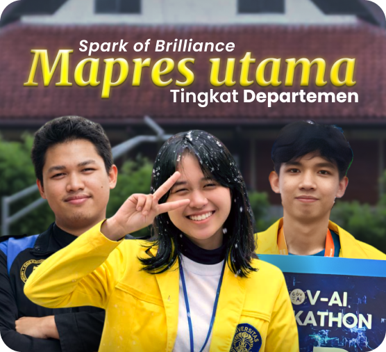
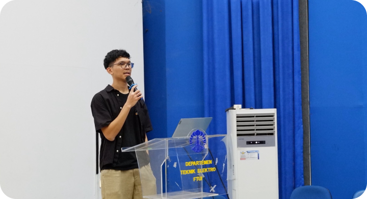
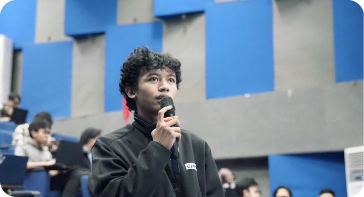
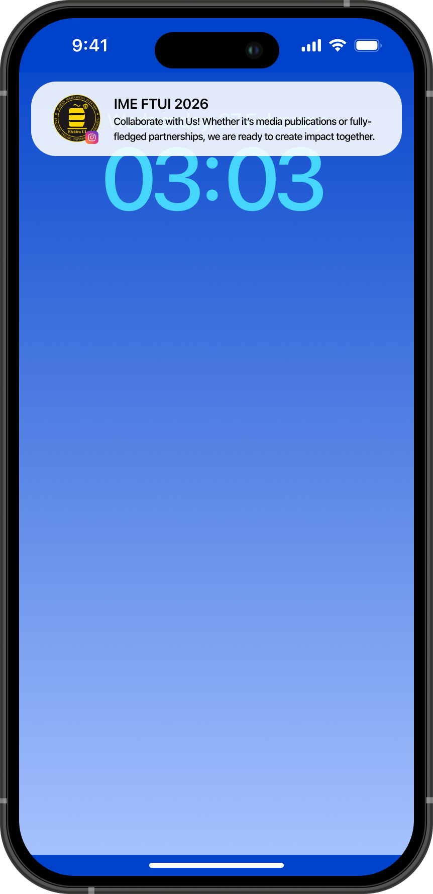

Get to know more
About Us

Kenali AIOS 2026 lebih dekat.


What's next — Phase H
Observation Window
24 Agt – 23 Sep 2026 · ACTIVE · 70 snapshot · 5 brief (3 BLOCKED · 2 SUCCESS) · 3 closed Rp 1,9 jt. Window ini tidak mengeksekusi — hanya mengamati.
Alur AIOS
Scan 70 → saring → ranking MEDIUM → brief 5 → gate POLICY_BLOCKED/SUCCESS → window ACTIVE. Tidak ada tebakan — semua tercatat.


The big picture
Highlights
Keeping Up with AIOS 2026
.
Snapshot 70 — Ranking
Semua 70 saham IDX diranking skor 38, MEDIUM. Bukan sinyal — urutan prioritas.
Semua 70 saham diranking skor 38, MEDIUM. Bukan sinyal — urutan prioritas. [2026-09-03T10:15:00] STATUS: POLICY_BLOCKED. Alasan: Risk limit over-exposure. Model merekomendasikan sizing 15% dari ekuitas, namun policy membatasi maksimal 10% per instrumen pada fase H. Entry dibatalkan.

Brief 5 — Keputusan
2 SUCCESS · 3 BLOCKED
[2026-08-25T09:00:00] STATUS: NO_TRADE. 70 snapshot diranking skor 38 MEDIUM — belum ada HIGH. 3 ditahan (POLICY_BLOCKED, no risk params). 2 lanjut dengan rasio 2.0 (3170 → 3106 → 3296). Tidak ada harga yang dikarang.

Gate: 3 BLOCKED · 2 SUCCESS
2 SUCCESS · 3 BLOCKED — Gate Menahan, Bukan Bug
[2026-09-02T14:30:00] STATUS: SUCCESS. Plan disetujui. Sizing 5%. RR 2.0. Bukti valid.

Window ACTIVE — 24 Agt–23 Sep 2026, Asia/Jakarta. Fail-closed. Tidak eksekusi.
Window ACTIVE · 24 Agt – 23 Sep
Window observasi Phase H — fail-closed, tidak eksekusi. Hanya catat.

Positions — 3 Closed · Rp 1,9 jt
3 Closed · Rp 1,9 jt Realized
3 posisi closed (BBCA ×2, TLKM ×1). Jurnal 0 — brief tidak otomatis jadi trade.
Tentang AIOS —
Tentang AIOS
Sistem operasi investasi personal — bukti ditulis, rencana ditahan, alasan disimpan.

Jurnal 0 — Belum ada entri. Brief tidak otomatis jadi trade.
Jurnal 0 — Belum Ada Entri
Brief tidak otomatis jadi trade. Jurnal kosong — butuh konfirmasi manual.

Scores — 70 × 38, 68 MEDIUM / 2 LOW
Skor 38 · 68 MEDIUM / 2 LOW
Distribusi skor: 68 MEDIUM, 2 LOW. Semua BUY — tidak ada SELL/HOLD.

Gate Policy — Fail-Closed
Risk — Gate Menahan 3
3 ditahan karena tanpa risk params. Sistem tidak mengarang entry/stop/target — fail-closed.


Mulai dari Atrium
AIOS tidak menerima titipan dana / sinyal. Ini alat observasi personal. Masuk via Atrium → Atlas (70) → Arc → Jejak.
Hover me
